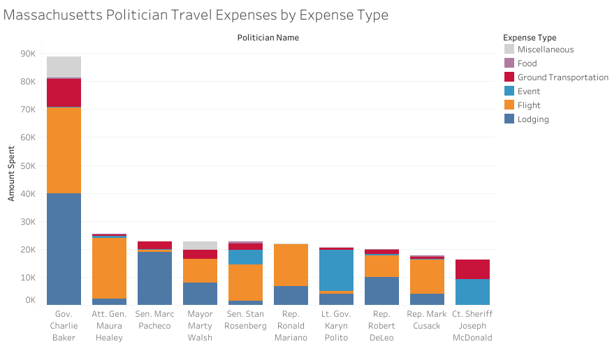
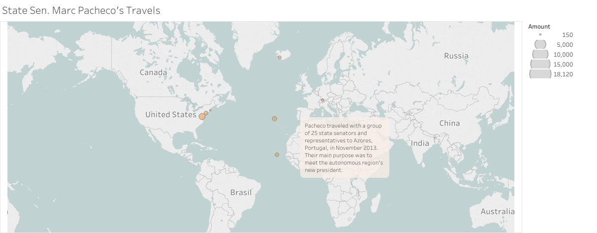
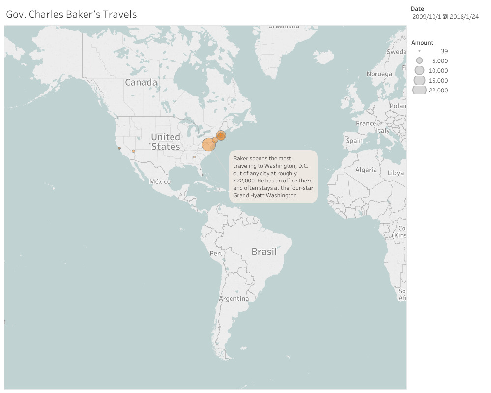
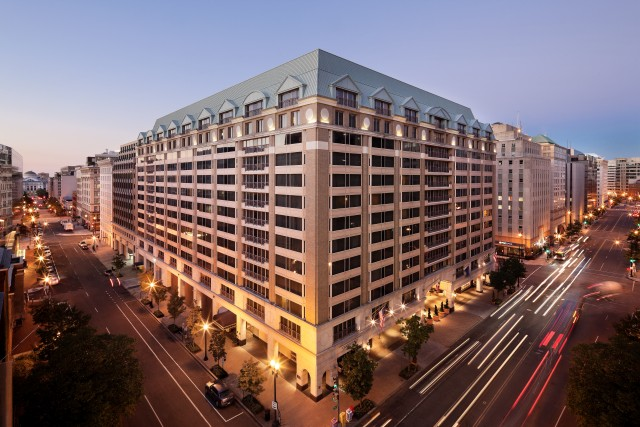
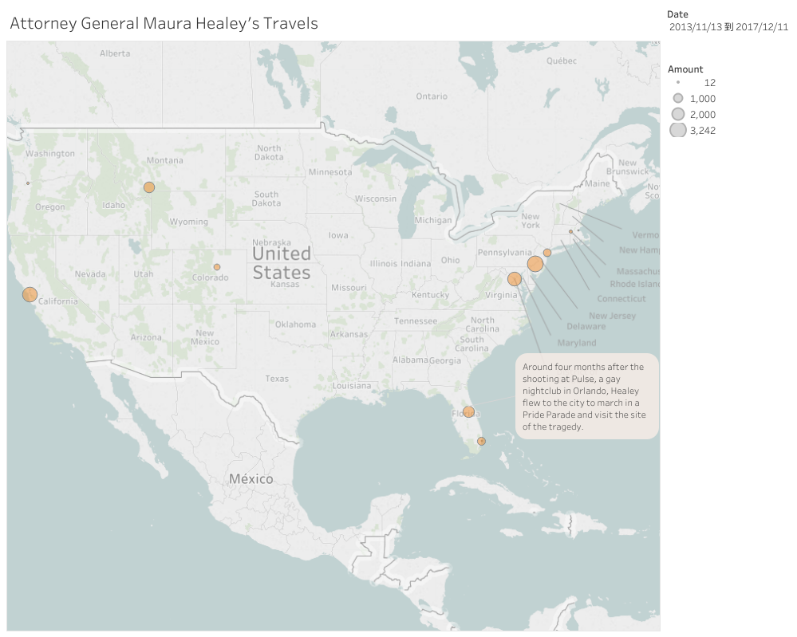
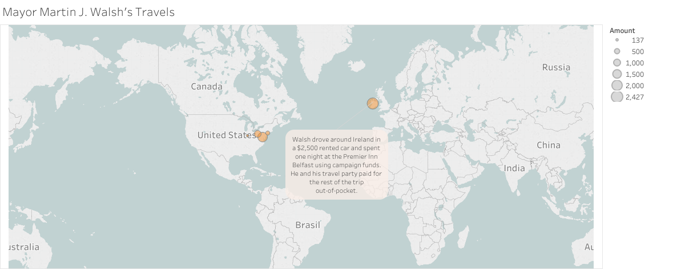

From Boston to Cape Verde, local politicians spend campaign money on travel
San Francisco. Portugal. Ireland. Washington, D.C. And, of course, Boston. Massachusetts politicians have spent their donors’ dollars traversing the United States and the globe, and even soaking up Boston hospitality when home is just a short drive away.
While the bulk of campaign funds that politicians raise are spent on the mundane and expected — like advertisements, lunches for staffers and election consultants — their travel and lodging payments show the creative ways politicians are spending these donations.
The Massachusetts Office of Campaign and Political Finance, or OCPF, tracks campaign contributions and how they’re spent based on mandatory reporting by politicians. Travel and lodging make up less than 1 percent of nearly $250 million in campaign expenditures since 2002, according to a Northeastern University journalism class analysis of the agency’s campaign finance data.
But a look at the top 10 spenders within the travel category provides a unique glimpse into their political journeys and strategies.
The Massachusetts Office of Campaign and Political Finance, or OCPF, tracks campaign contributions and how they’re spent based on mandatory reporting by politicians. Travel and lodging make up less than 1 percent of nearly $250 million in campaign expenditures since 2002, according to a Northeastern University journalism class analysis of the agency’s campaign finance data.
But a look at the top 10 spenders within the travel category provides a unique glimpse into their political journeys and strategies.

According to the analysis, each of these politicians spent at least $15,000 on travel and lodging. Federal law allows politicians to spend money raised from donors on anything that furthers their political career, so politicians end up traveling for a multitude of reasons: to attend political conventions, speak at political events and shuttle between home and the state capital.
On the more exciting end of the spectrum is international travel, which gives politicians a chance to explore varying political landscapes while interacting with foreign officials and business executives.
For instance, Marc Pacheco, who represents the 1st Plymouth and Bristol District in the Massachusetts Senate, has stretched his campaign funds over four countries: Portugal, Cape Verde, Iceland and Switzerland. Since 2003, Pacheco has spent more than $20,000 in campaign funds on travel for events like a bilateral conference with the President of Azores, Portugal and attending a legislative temple mission. Northeastern students working with WCVB recently highlighted Pacheco for his even more extensive travel funded by private organizations and foreign governments, and his lack of transparency about those trips.
On the more exciting end of the spectrum is international travel, which gives politicians a chance to explore varying political landscapes while interacting with foreign officials and business executives.
For instance, Marc Pacheco, who represents the 1st Plymouth and Bristol District in the Massachusetts Senate, has stretched his campaign funds over four countries: Portugal, Cape Verde, Iceland and Switzerland. Since 2003, Pacheco has spent more than $20,000 in campaign funds on travel for events like a bilateral conference with the President of Azores, Portugal and attending a legislative temple mission. Northeastern students working with WCVB recently highlighted Pacheco for his even more extensive travel funded by private organizations and foreign governments, and his lack of transparency about those trips.

Pacheco ranks somewhere in the middle on the list of top-10 travel spenders, trailing far behind Governor Charlie Baker, who leads Massachusetts politicians in travel expenditures with more than $85,000.
Other leaders in travel expenses are: Lt. Gov. Karyn Polito, Attorney General Maura Healey, Boston Mayor Marty Walsh, House Speaker Robert DeLeo, Rep. Ronald Mariano, Sen. Stanley Rosenberg, Rep. Mark Cusack and Plymouth County Sheriff Joseph McDonald Jr.
Baker’s campaign paid for trips to at least seven different states, but spent the most within his home state’s borders. In fact, his campaign paid more than $19,000 on Massachusetts hotels since 2009. Baker and members of his campaign team have stayed in at least 10 different Boston hotels, including the Boston Marriott Copley Place, Westin Boston Waterfront and Four Seasons Hotel, rating three, four and five stars, respectively.
Other leaders in travel expenses are: Lt. Gov. Karyn Polito, Attorney General Maura Healey, Boston Mayor Marty Walsh, House Speaker Robert DeLeo, Rep. Ronald Mariano, Sen. Stanley Rosenberg, Rep. Mark Cusack and Plymouth County Sheriff Joseph McDonald Jr.
Baker’s campaign paid for trips to at least seven different states, but spent the most within his home state’s borders. In fact, his campaign paid more than $19,000 on Massachusetts hotels since 2009. Baker and members of his campaign team have stayed in at least 10 different Boston hotels, including the Boston Marriott Copley Place, Westin Boston Waterfront and Four Seasons Hotel, rating three, four and five stars, respectively.

Baker lives with his family 12 miles north of Boston in Swampscott, Massachusetts, a commute that typically takes between 30 minutes and an hour, depending on traffic. In addition to his office in Boston, Baker has offices in Springfield, Massachusetts, and Washington, D.C. The latter city demands the most of Baker’s travel funds out of any city at roughly $22,000. There, he often stays at the four-star Grand Hyatt Washington.

A significant portion of all travel expenses among Massachusetts’ top spenders in this category are for lodging, totaling nearly $95,000. Among these hotels, 35 percent were located in Boston.
The majority of travel-related expenses for Polito, the lieutenant governor who was elected with Baker in November 2014, also fall in the local lodging category.
A Republican from Shrewsbury, Polito spent about $20,000 from her campaign coffers on travel-related expenses, according to OCPF data. Her largest campaign expenditure was $14,000 used for an August 2016 annual finance retreat at the waterside Beauport Hotel in Gloucester, Massachusetts. The records show Polito spent another $700 for the retreat, paid to Sip Wine Education of Swampscott, a company that brings wine-tasting to parties and events both social and corporate, according to their website.
Attorney General Healey’s travel tends to be broader and more distinctly issues-focused. Healey — the first openly gay attorney general elected in the U.S. — and her campaign staff attended more than a dozen conferences, events and speaking engagements since 2013, at least five of which pertained to women’s and LGBT issues.
In 2015, the year she assumed office, the attorney general spoke at the 10th anniversary of emergeAmerica, an organization that trains Democratic women for political office. She also attended that year’s annual Democratic National Committee LGBT Gala and was name-dropped by former President Barack Obama in his opening remarks.
More recently, Healey traveled to Orlando in October 2016 to visit the sight of the Pulse nightclub shooting and to march in Orlando’s Most Colorful Parade. In total, the campaign spent around $6,500 sending Healey and her staffers to events centered on these issues — around a quarter of its total travel expenses.
The majority of travel-related expenses for Polito, the lieutenant governor who was elected with Baker in November 2014, also fall in the local lodging category.
A Republican from Shrewsbury, Polito spent about $20,000 from her campaign coffers on travel-related expenses, according to OCPF data. Her largest campaign expenditure was $14,000 used for an August 2016 annual finance retreat at the waterside Beauport Hotel in Gloucester, Massachusetts. The records show Polito spent another $700 for the retreat, paid to Sip Wine Education of Swampscott, a company that brings wine-tasting to parties and events both social and corporate, according to their website.
Attorney General Healey’s travel tends to be broader and more distinctly issues-focused. Healey — the first openly gay attorney general elected in the U.S. — and her campaign staff attended more than a dozen conferences, events and speaking engagements since 2013, at least five of which pertained to women’s and LGBT issues.
In 2015, the year she assumed office, the attorney general spoke at the 10th anniversary of emergeAmerica, an organization that trains Democratic women for political office. She also attended that year’s annual Democratic National Committee LGBT Gala and was name-dropped by former President Barack Obama in his opening remarks.
More recently, Healey traveled to Orlando in October 2016 to visit the sight of the Pulse nightclub shooting and to march in Orlando’s Most Colorful Parade. In total, the campaign spent around $6,500 sending Healey and her staffers to events centered on these issues — around a quarter of its total travel expenses.

Mayor Walsh used campaign money to fly to Pittsburgh in October 2016. There, he campaigned for former Democratic presidential frontrunner Hillary Clinton, especially among laborers. Alongside Terry O’Sullivan, president of the Laborers’ International Union of North America, or LiUNA, Boson Magazine reported Walsh led a walk including hundreds of the union’s members.
Although Pacheco has the most extensive list of countries marked off on his map among top travellers, Walsh also used campaign money to explore foreign soil. In 2014, Walsh traveled to Ireland, where the Boston Globe reported he met with local business people, attended Catholic masses and visited historical landmarks around the country.
A son of two Irish immigrants, Walsh also visited places where he spent his childhood summers. Other than the near-$2,500 he spent on a rental car and one night’s lodging expense, though, none of the trip was logged in the OCPF. The Globe reported the trip would be paid for by a combination of campaign donations and Walsh’s own money.
Although Pacheco has the most extensive list of countries marked off on his map among top travellers, Walsh also used campaign money to explore foreign soil. In 2014, Walsh traveled to Ireland, where the Boston Globe reported he met with local business people, attended Catholic masses and visited historical landmarks around the country.
A son of two Irish immigrants, Walsh also visited places where he spent his childhood summers. Other than the near-$2,500 he spent on a rental car and one night’s lodging expense, though, none of the trip was logged in the OCPF. The Globe reported the trip would be paid for by a combination of campaign donations and Walsh’s own money.

Mariano nearly matched Pacheco’s and Walsh’s travel and lodging payments through a combination of international and domestic trips. In May 2016, Mariano traveled to Germany to meet with the German Parliament to discuss state budget policy. Within the United States, he logs visits to Seattle, Minneapolis and Worcester, Massachusetts.
Perhaps the prolific traveler of the state legislature is Cusack, a Democrat representative from Braintree who was just 26 years old when he assumed his position in January 2011. Since then, he’s used campaign money to travel to at least 27 conferences and conventions across the U.S.
McDonald’s travel expenses have been tame compared to other top spenders in the state. As the Plymouth County sheriff, he is in charge of criminals serving small time — less than 2.5 years — in the county’s correctional facilities. According to the OCPF, McDonald spent around $16,000 on travel-related expenses since 2005, the year he took office. With the exception of a $6,800 “campaign vehicle” in 2010, McDonald spent most of his money on multiple conferences which ranged from $50 to $780.
While the OCPF only accounts for trips these politicians made using campaign funds — a far cry from representing all of their state, country and worldwide travel — it provides a taste of their travel priorities, including who prioritizes travelling in the first place. From Walsh revisiting his roots to Healey supporting a city’s LGBT community in the midst of a tragedy, travel is one crucial part of all political stories.
Perhaps the prolific traveler of the state legislature is Cusack, a Democrat representative from Braintree who was just 26 years old when he assumed his position in January 2011. Since then, he’s used campaign money to travel to at least 27 conferences and conventions across the U.S.
McDonald’s travel expenses have been tame compared to other top spenders in the state. As the Plymouth County sheriff, he is in charge of criminals serving small time — less than 2.5 years — in the county’s correctional facilities. According to the OCPF, McDonald spent around $16,000 on travel-related expenses since 2005, the year he took office. With the exception of a $6,800 “campaign vehicle” in 2010, McDonald spent most of his money on multiple conferences which ranged from $50 to $780.
While the OCPF only accounts for trips these politicians made using campaign funds — a far cry from representing all of their state, country and worldwide travel — it provides a taste of their travel priorities, including who prioritizes travelling in the first place. From Walsh revisiting his roots to Healey supporting a city’s LGBT community in the midst of a tragedy, travel is one crucial part of all political stories.
Methodology
The OCPF provides campaign finance data for all of the political campaigns in Massachusetts, starting from the year 2000. Our class decided to focus on campaign expenditures since the year 2002. Upon receiving the data as a csv file, each expenditure was categorized using OpenRefine into categories of restaurant, food, campaign, travel, fundraising, events, contribution, office, consulting, advertising, golf, entertainment, flowers, and reimbursements.
Our group then decided to focus on the expenditures in the travel category. We aggregated a list of politicians with their total travel expenditures and decided to examine the 10 politicians who spent the most on travel with their campaign finances.
Looking at each politician’s data, we went through each expenditure and deduced the location of where the expense was spent from purpose descriptions, lodging names, or outside research such as social media and news sources.
Our group then decided to focus on the expenditures in the travel category. We aggregated a list of politicians with their total travel expenditures and decided to examine the 10 politicians who spent the most on travel with their campaign finances.
Looking at each politician’s data, we went through each expenditure and deduced the location of where the expense was spent from purpose descriptions, lodging names, or outside research such as social media and news sources.